Ofrecemos clases de hatha yoga o yoga activo donde conectamos el alma con el cuerpo a través de asanas, movimientos y respiración.
Son clases donde ejercitaremos el cuerpo pero desde la conciencia y el ser.
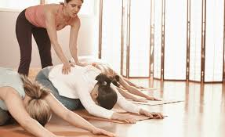
Yoga terapeutico
El yoga terapéutico se compone de una variedad de posturas y ejercicios diseñados para aliviar dolencias específicas y promover la salud integral. Estos ejercicios son adaptaciones de las posturas tradicionales del yoga, enfocadas en objetivos terapéuticos.
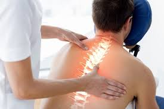
Fisioterapia
Cuando se produce una lesión haciendo ejercicio o durante la actividad diaria, así como una mala postura, la persona afectada suele presentar ciertos síntomas que precisan de un tratamiento experto.
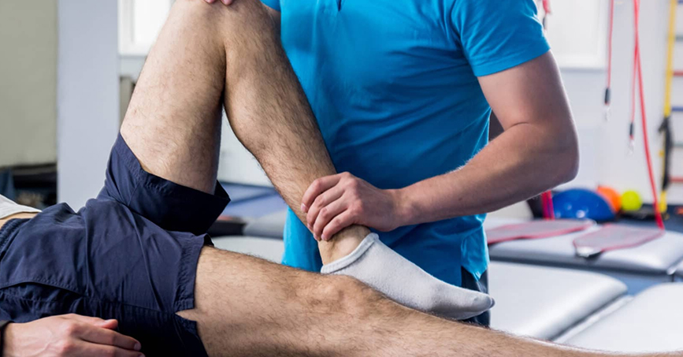
Fisioterapia deportiva
La fisioterapia deportiva es una rama de la fisioterapia, que va dirigida a toda persona que practique deporte habitualmente, tanto si es un deporte de base, amateur, de salud, de élite o alto rendimiento.
La fisioterapia deportiva consiste en hacer un trabajo preventivo y otro de recuperación de lesiones.
Psicoterapia individual
Los psicoterapeutas aplican procedimientos validados científicamente para ayudar a las personas a cambiar sus pensamientos, emociones y conductas, entendiendo las primeras para poder afrontar el día a día con salud y ser más felices
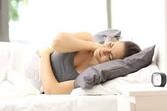
Psicoterapia para el dolor
Sentir dolor crónico es algo complejo: se extiende a todos los ámbitos de la vida y puede causar depresión. Afrontar desde una perspectiva global el estímulo doloroso con diferentes herramientas psicosociales pueden cambiar su vivencia y mejorar la calidad de vida del paciente.
Terapias holísticas
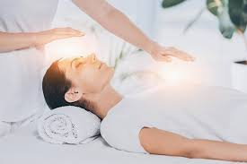
Reiki
Uno de los métodos curativos más antiguos de la humanidad, que a través de la imposición de manos usa la energía del maestro para sanar y equilibrar
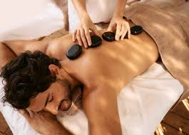
Masajes
El masaje como método relajantes y equilibrante es perfecto para cuidarte. Usamos diferentes técnicas para que reconectes
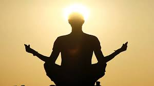
Meditación
Meditar es respirar, estar presente, reconectar con el cuerpo y el alma. La práctica continuada ayuda a reducir la ansiedad, mitigar el dolor, para vivir el ahora sin cargas.
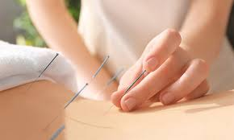
Acupuntura
La aplicación de agujas en puntos clave del cuerpo ayuda a reducir el dolor, las nauseas y la ansiedad, entre otras cosas.
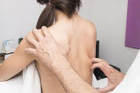
Kinesiología
Esta terapia manual estudia los músculos para detectaro prevenir desquilibrios. Se aplican estímulos ligeros sobre los músculos para determinar donde está el problema.
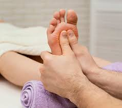
Reflexología
la reflexología aplica masaje de presion en manos o pies donde se refleja la mayor parte del organismo
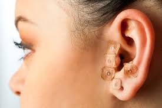
Auriculoterapia
Este es un tipo especializado de acupuntura que se mezcla son la reflexología y que se aplica sobre las orejas.
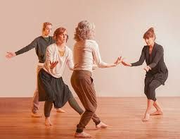
Danzaterapia
Esta terapia busca expresar y liberar emociones a través del baile y al mismo tiempo mejorar la postura, las tensiones o la respiración.
Tarifas
Tarifas 1
Servicios principales
Yoga activo---37€/hora a la semana
Yoga terapéutico---38€/hora a la semana
Fisioterapia---40€/hora
Hay un suplemento para sesiones a domicilio
Fisioterapia deportiva---42€/hora
Psicoterapia individual--- 50€/hora
Psicoterapia dolor crónico---50€/hora-
47€/hora-virtual
Tarifas 2
Otros
Reiki---35€/hora
Masajes relx---20€/ media hora --- 50€---1hora
Meditación---40€/hora y media
Acupuntura---50€/hora
Kinesiología--- 45€/hora
Reflexiología---20€/media hora ---50€/hora
Auriculoterapia---35€/hora
Danzaterapia--- consultar disponibiidad
Disponemos de tarjetas regalo y bonos de terapia. No dudes en preguntarnos cualquier duda en nuestra sección de Presupuesto